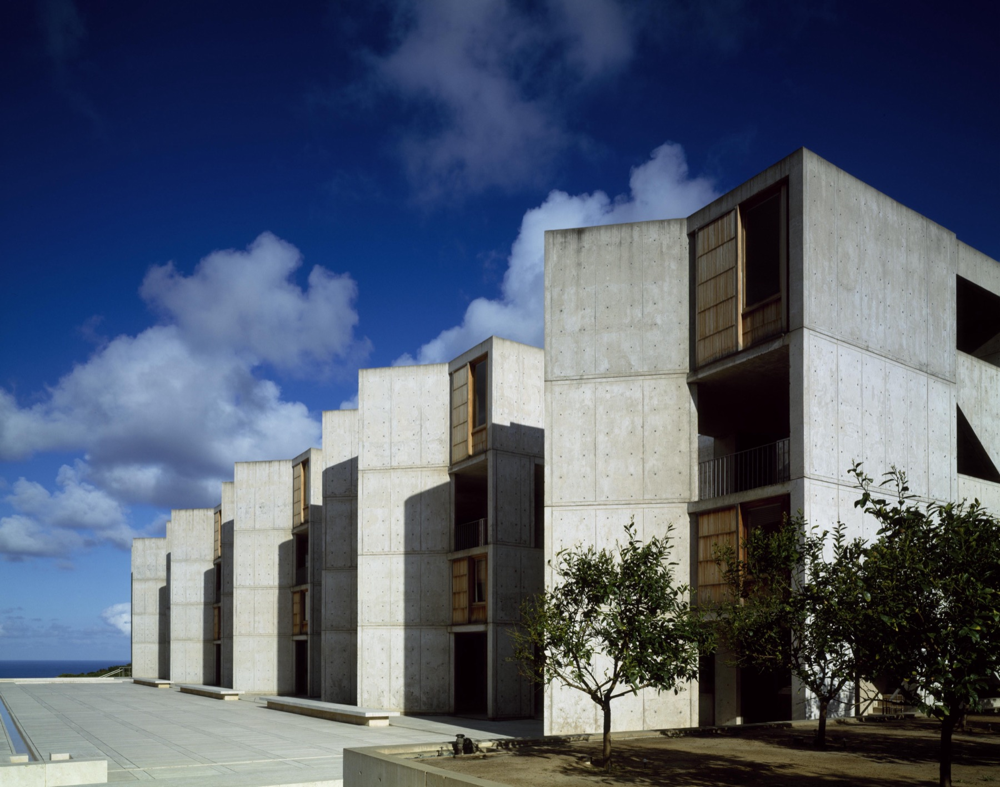
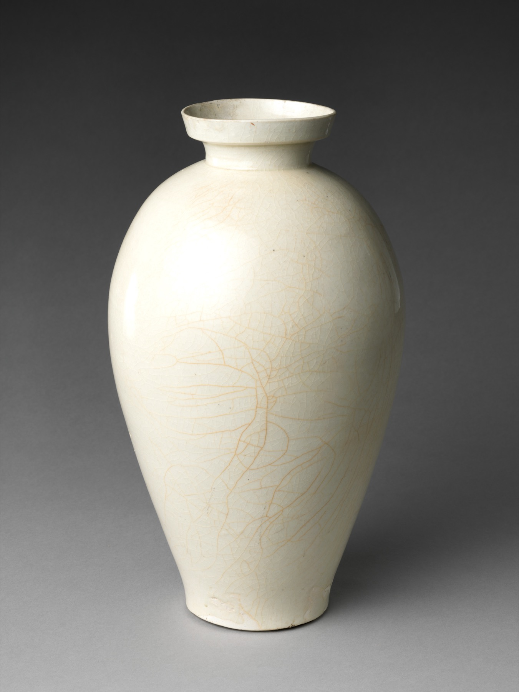
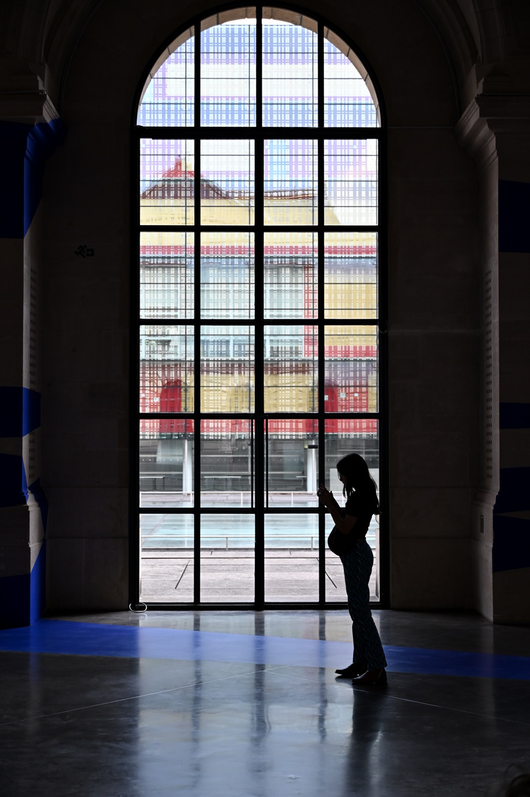
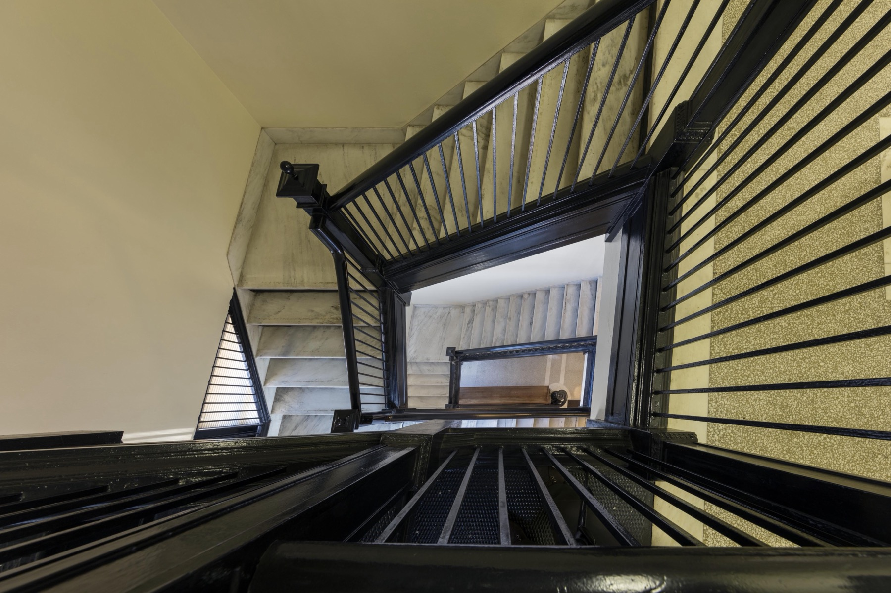

Meridian
Inside
Concrete, porcelain, paint
- 06The Salk Institute at sixty
- 18A Song dynasty vase
- 24Mara Vell on painting at night
Inside
Concrete, porcelain, paint
Contents
Why this issue is about light.
Louis Kahn's laboratory, and the courtyard between its two wings.
A porcelain vase from Jingdezhen, 11th–12th century.
Mara Vell on working without daylight.

This issue looks at how light changes what we see: a building over one day, a glaze under a lamp, a painting made after dark.
— The editors
Architecture · 06
Louis Kahn's laboratory in La Jolla opened in 1965. Sixty years later, we spent a day in its courtyard.
At eleven the courtyard is almost all light. By two, the shadow of the west wing covers half of it, and by five the whole floor is in shade.
The walls are concrete, cast against wooden formwork, and up close you can still see the grain of the boards. From the far end of the courtyard they read as one surface.
“The building stays the same. The light on it changes all day.”
A narrow channel of water runs down the middle of the courtyard toward the Pacific. The building stays the same. The light on it changes all day.
Object studyNo. 07

Collection
A vase, Jingdezhen, eleventh to twelfth century
“Qingbai” means bluish white, the colour the glaze takes where it pools. The decoration is incised into the clay under the glaze, so it shows best in low, raking light and almost disappears under a ceiling lamp.
Photograph: The Metropolitan Museum of Art, public domain
19Conversation · 24
“I paint with the lights off, and fix it in the morning.”


Subscribe
Four issues a year
Printed on uncoated paper and posted at the start of each season.